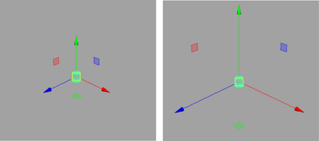
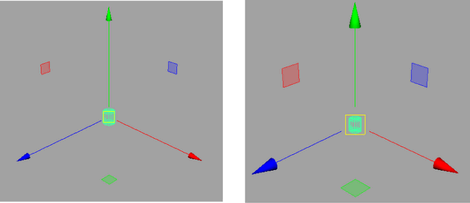
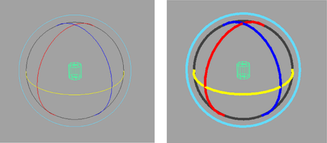
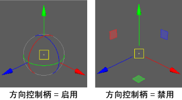
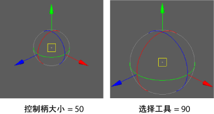

可以在首选项(Preferences)窗口的“操纵器”(Manipulators)类别中设置以下首选项。
若要返回到出厂默认设置，请在此窗口中选择(Edit > Restore Default Settings)。请注意，这将重置“首选项”(Preferences)窗口中每个类别的首选项。若要放大或缩小操纵器，请参见调整操纵器大小。
操纵器大小(Manipulator sizes)
-
全局比例(Global Scale)
-
指定操纵器的大小。范围为从 0.10 到 10.00。

-
控制柄大小
-
指定控制柄的大小。范围为从 4 到 100。

-
线宽(Line size)
-
指定旋转操纵器环的线的厚度大小。

-
拾取线宽(Line pick size)
-
确定拾取旋转操纵器环时使用的线的厚度。拾取大小应与线宽相同，因此可识别该大小的环将拾取的控制柄。
-
前一状态大小(Previous state size)
-
控制对前一反馈绘制的点的大小。例如，对于移动工具，将绘制一个轴，以指示前一位置，轴的端点带方形点。它控制方形的大小。
旋转和缩放操纵器也具有前一状态反馈。仅在拖动时才会显示此类型的反馈；释放鼠标后会立即消失。
显示操纵器(Show Manipulator)
-
默认操纵器(Default manipulator)
-
可以在“显示操纵器”(Show Manipulator)区域中指定“默认操纵器”(Default Manipulator)选项，以控制在选择“显示操纵器工具”(Show Manipulator Tool)时将显示哪个操纵器（如果有）。“默认操纵器”(Default Manipulator)选项包括：
-
无(None)
-
不显示操纵器。
-
平移(Translate)
-
显示“移动工具”(Move Tool)的操纵器。
-
旋转(Rotate)
-
显示“旋转工具”(Rotate Tool)的操纵器。
-
缩放(Scale)
-
显示“缩放工具”(Scale Tool)的操纵器。
-
变换(Transform)
-
显示“变换”(Transform)（三倍）操纵器。
-
智能(Smart)
-
（默认）检查第一个子对象，如果该对象是形状，则显示该形状的历史操纵器。否则显示“变换”(Transform)（三倍）操纵器。
操纵器可见性(Manipulator Visibility)
-
隐藏操纵器(Hide Manipulator)
-
当操纵器处于隐藏状态时，可选择的组件更为明显，从而易于在选择中添加或去除组件。可在“按下 Ctrl 时”(When Ctrl is held)、“按下 Shift 时”(When Shift is held)或“按下 Ctrl + Shift 时”(When Ctrl + Shift is held)隐藏操纵器。
组件操纵器(Component Manipulators)
-
使用鼠标中键重新定位(Reposition using middle mouse button)
-
使用鼠标中键在组件模式中重新定位移动、旋转和缩放操纵器。这会在一个操作中移动枢轴点和操纵器。
在视图中单击鼠标中键时，操纵器会移动到该位置并立即处于活动状态。当枢轴点和操纵器在一个操作中移动时，该选项对于“旋转工具”(Rotate Tool)非常有用。
控制柄选择(Handle Selection)
-
移动/旋转/缩放工具切换(Move/Rotate/Scale Tool Switch)
-
指定在变换工具之间切换时，如何影响活动的操纵器控制柄。选择“重置以查看平面控制柄”(Reset to view plane handle)（默认）或“记住活动控制柄”(Remember active handle)。
注： 在 Maya 2015 和先前版本中，“移动/旋转/缩放工具切换”(Move/Rotate/Scale Tool Switch)称为“切换变换工具时”(On Transform Tool switch)。
-
选择更改(Selection Change)
-
指定当调整选择时活动操纵器控制柄如何变化。选择“重置以查看平面控制柄”(Reset to view plane handle)和“记住活动控制柄”(Remember active handle)（默认）。
-
拾取范围(Pick Range)
-
设置在操纵器控制柄亮显之前光标必须处于的范围。默认情况下，此范围设置为 8 像素。
操纵器平面控制柄(Manipulator Plane Handles)
-
平面控制柄(Plane handles)
- 控制平面控制柄的可见性。平面控制柄在默认情况下处于启用状态。
-
平面控制柄偏移(Plane Handle Offset)
- 设置平面控制柄与操纵器中心之间的距离。请参见使用操纵器移动、旋转和缩放。
枢轴操纵器(Pivot Manipulator)
- 方向控制柄(Orientation handle)
- 控制方向控制柄的可见性。方向控制柄在默认情况下处于启用状态。

- 方向控制柄大小(Orientation handle size)
- 设置方向控制柄的大小。默认大小是 50。

灯光操纵器(Light Manipulator)
- 显示半影的衰退区域(Show Decay Regions for Penumbra)
-
对于聚光灯，启用此选项可分别以虚线和实线显示半影衰退区域和圆锥体角度。提供了单独的操纵器，可用于以交互方式调整每个半影角度和圆锥体角度。请参见调整聚光灯的半影角度和调整聚光灯的圆锥体角度。
通道盒操纵器(Channel Box Manipulator)
在
“通道盒”(Channel Box)中选择属性时，Maya 会自动在视口中显示相应的操纵器，从而允许您修改选定属性（即平移、旋转、缩放）。这些操纵器是 Maya 标准操纵器的独立实例，可以为其指定自己的设置。
注： 设置以下首选项不会影响当前 Maya 会话。更新仅应用于将来的 Maya 会话，因此必须重新启动 Maya 才能看到变化。若要在当前 Maya 会话中更新
“通道盒”(Channel Box)操纵器状态，请从
“通道盒”(Channel Box)菜单中选择
“编辑 > 设置 > 不可见操纵器/无操纵器/标准操纵器”(Edit > Settings > Invisible Manipulators/No Manipulators/Standard Manipulators)。
- 无操纵器(No Manipulators)
- 完全移除属性的“通道盒”(Channel Box)操纵器并禁用拖动。
- 不可见操纵器(Invisible Manipulators)
- 防止在选择属性名称时显示“通道盒”(Channel Box)操纵器。
- 标准操纵器(Standard Manipulators)
- 允许在选择属性名称时显示“通道盒”(Channel Box)操纵器。
有关详细信息，请参见在“通道盒”(Channel Box)中显示或隐藏属性的操纵器。